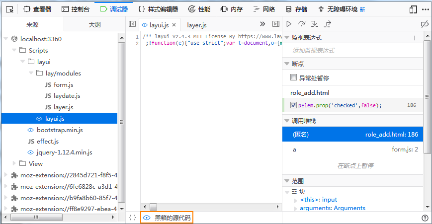

在JS代码中加入 debugger 即可进入调试器，如：
if(eC3_check > 0){
debugger;
pElem.prop('checked',false);
form.render('checkbox', fl);
}
T左下角的眼睛是一个按钮，可以在你选中文件后进行 black box （切换黑盒）。切换黑盒功能在查看源文件但不调试源文件时非常有用，就像jQuery的包一样。如果一个资源进入黑盒状态，此时调试器将不在关注此资源：所有在些文件中设置的断点将会失效，并且调试器跟踪到这里时将会跳过这里的代码。
这对花括号 { } 允许你将压缩过（minified）的脚本进行美化 ,这样方便你的阅读.